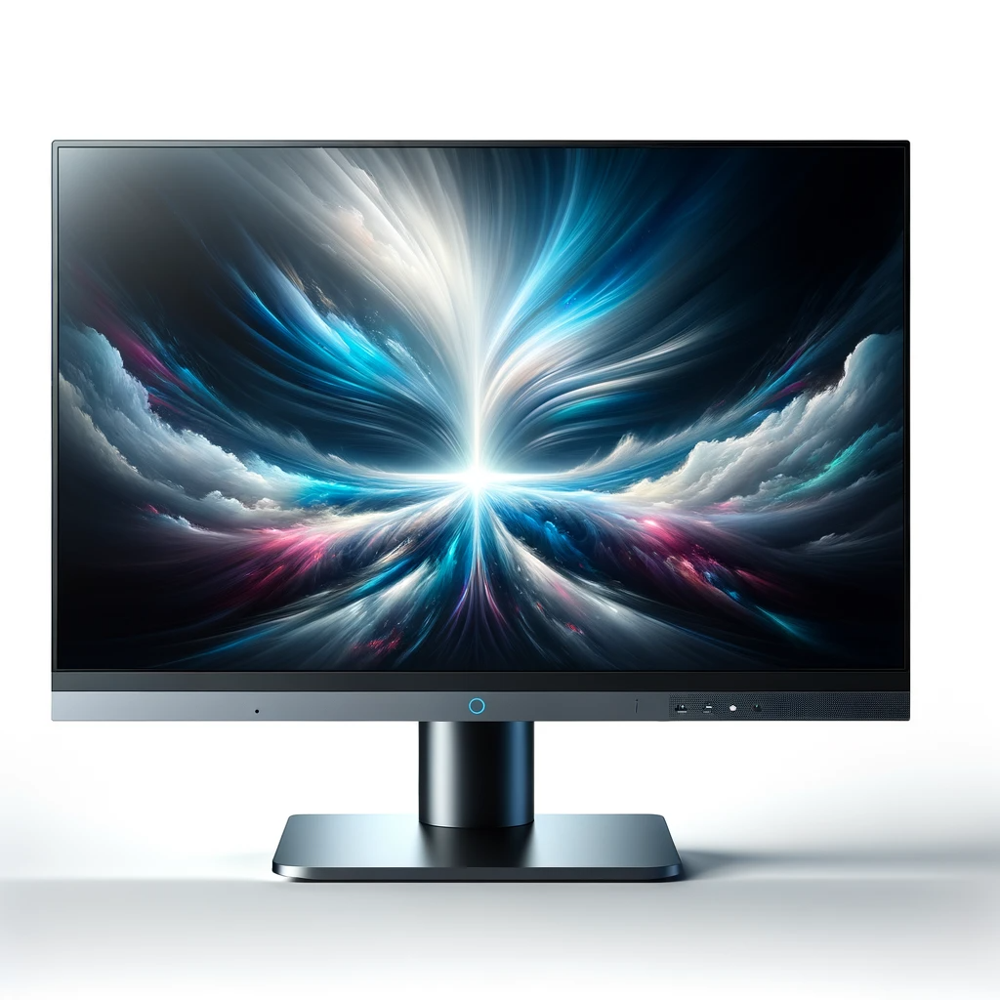

Computer products
-
Carte Graphique
une carte graphique moderne avec un niveau de détail élevé. La carte graphique est posée sur un fond blanc, mettant en évidence sa structure complexe, ses ventilateurs de refroidissement et ses différents connecteurs.
-
Carte Mère
La carte mère est présentée sur un fond blanc, mettant en avant son circuit complexe, ses emplacements et ses connecteurs. La conception inclut des emplacements pour la RAM, un socket pour le processeur (CPU), ainsi que divers ports pour la connectivité.
-
Processeur central
Un processeur central (CPU) moderne. Sur un fond blanc, image met en lumière l'architecture complexe et le circuit miniature du CPU. Le design révèle la puce du CPU avec ses nombreux transistors, broches, et un circuit intégré visible.
-

Mémoire RAM
un module de mémoire RAM moderne. Sur un fond blanc, le module de RAM est présenté avec un design élégant et compact.
-
Tour d'ordinateur de bureau
une tour d'ordinateur de bureau moderne. Sur un fond blanc, la tour est représentée avec un design élégant et stylé. Elle dispose d'un boîtier robuste avec un panneau latéral transparent qui révèle les composants internes, tels que la carte mère, la RAM et la carte graphique. Des éclairages LED à l'intérieur du boîtier ajoutent une touche futuriste.

-

Ecran d'ordinateur
un écran d'ordinateur moderne. L'écran est représenté sur un fond blanc, mettant en valeur son design plat et élégant avec des bordures fines. La conception comprend un affichage haute résolution, un support réglable, et plusieurs ports pour la connectivité.